Closest to 01 · open · graceful
Primary sizes, light & construction ↗Covan Labs / Hybrid refinement
H1 is the selected master direction. Continue to H1 final optical polish.
Three hybrids built on 01’s tall, open silhouette.
Restrained personality from 03. A touch of precision from 02.
Closest to 01 · open · graceful
Primary sizes, light & construction ↗
Expressive opening · organic tension
Primary sizes, light & construction ↗Disciplined curves · light structure
Primary sizes, light & construction ↗H1 stays closest to Elegant Flow. H2 adds the strongest opening character. H3 brings a little more geometric discipline. Each keeps the slender body and generous counter, with aqua following the curved source overlap.
Evaluate at 256, 128 and 64px, then in the navbar. A simplified Micro C follows primary selection; small reductions remain secondary references only.